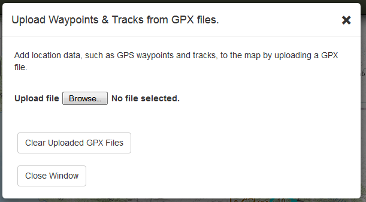
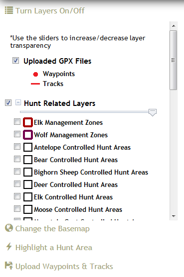
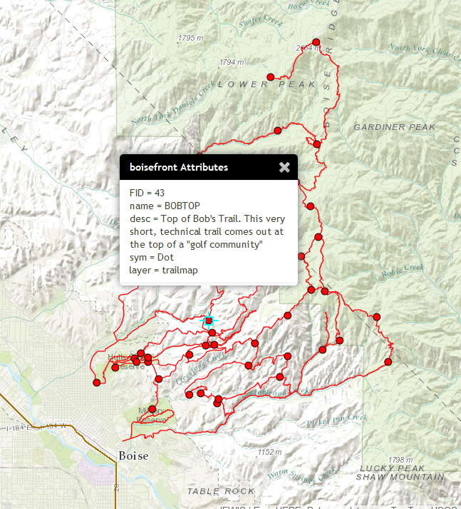

UPLOAD WAYPOINTS & TRACKS
If you would like to add your own location data, such as GPS waypoints and tracks, upload them as a GPX file using this tool. If you data is some other kind of format such as kml, shp, txt, csv, wpt, dat, or some other GPS specific file type you may find GPSVisualizer or GPSBabel helpful tools for converting them to GPX.

Simply click the 'Browse' button, navigate to the GPX file you would like to upload and it will be added to the map. You can add multiple GPX files.
You can clear GPX data by clicking the 'Clear Uploaded GPX Files' button or toggle the GPX layer(s) on/off in the 'Turn Layers On/Off' window by checking/unchecking the box.

To see the attributes of the waypoints and tracks you added, click one in the map to get a popup information box.

Created with the Personal Edition of HelpNDoc: Easy CHM and documentation editor